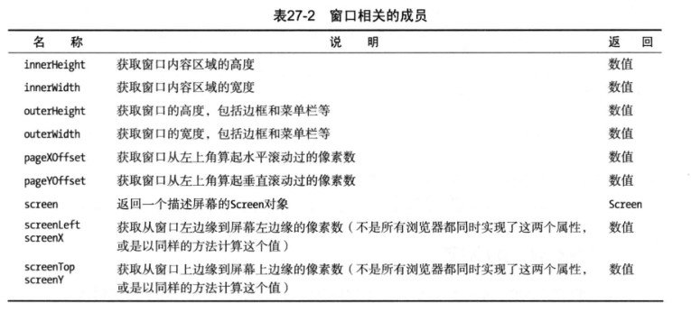

HTML-DOM教程
DOM是W3C的标准，是与语言无关的通用的用于操作文档的一种技术规范。
简介
什么是DOM
DOM是W3C的标准。DOM定义了访问HTML和XML文档的标准：
W3C DOM标准被分为3个不同的部分：
- 核心DOM-针对任何结构化文档的标准模型
- XMLDOM-针对XML文档的标准模型
- HTMLDOM-针对HTML文档的标准模型
注：DOM是Document Object Model(文档对象模型)的缩写
理解DOM Level以及兼容性
DOM Level
DOM的标准化不是一蹴而就的，而是一步步地改进完善。DOM Level本质上是DOM标准化过程中的不同版本。分为1级DOM、2级DOM、3级DOM以及“0级”DOM。
- 1级DOM
1级DOM在1998年10月份成为W3C的提议，由DOM核心与DOM HTML两个模块组成。DOM核心能映射以XML为基础的文档结构，允许获取和操作文档的任意部分。DOM HTML通过添加HTML专用的对象与函数对DOM核心进行了扩展。 - 2级DOM
鉴于1级DOM仅以映射文档结构为目标，DOM 2级面向更为宽广。通过对原有DOM的扩展，2级DOM通过对象接口增加了对鼠标和用户界面事件（DHTML长期支持鼠标与用户界面事件）、范围、遍历（重复执行DOM文档）和层叠样式表（CSS）的支持。同时也对DOM 1的核心进行了扩展，从而可支持XML命名空间。 - 3级DOM
3级DOM通过引入统一方式载入和保存文档和文档验证方法对DOM进行进一步扩展，DOM3包含一个名为“DOM载入与保存”的新模块，DOM核心扩展后可支持XML1.0的所有内容，包括XML Infoset、 XPath、和XML Base。 - “0级”DOM
当阅读与DOM有关的材料时，可能会遇到参考0级DOM的情况。需要注意的是并没有标准被称为0级DOM，它仅是DOM历史上一个参考点（0级DOM被认为是在Internet Explorer 4.0 与Netscape Navigator4.0支持的最早的DHTML）。
兼容性
每一个DOM Level都有描述它的标准和文档，但他们并没有被完整地实现，浏览器只是简单地挑选了其中的有用功能，而且，已经实现的功能之间还存在某种程度的不一致性。
有多种方式应对DOM功能的多变性：
- 使用JavaScript库
JavaScript库消除了浏览器之间实现方式的差别，优点是其一致性，缺点是只能使用库支持的那些功能。 - 保守方式
只使用你所知的被广泛支持的那些功能。 测试DOM功能
第三种方式是测试与某一功能相关的DOM对象属性或方法是否存在。123456var images;if(document.querySelectorAll){images = document.querySelectorAll("#paratext > img");}else{images = document.getElementById("paratext").getElementsByTagName("img");}缺陷是充斥大量测试代码，且并不总是存在另一种方式能实现某个给定功能的效果。
在这篇文章，我们主要学习的是HTMLDOM，HTML DOM 定义了所有 HTML 元素的对象和属性，以及访问它们的方法。
使用Document对象
DOM的一个关键组成部分就是Document对象。Document对象是通往DOM功能的入口，它向你提供了当前文档的信息，以及一组可供探索、导航、搜索或操作结构与内容的功能。
我们通过变量document访问Document对象，它是浏览器为我们创建的关键对象之一。
使用Document元数据
Document对象的用途之一是向你提供关于文档的信息。下表介绍了你可以用来获取文档元数据的属性。

获取文档信息
123456789101112131415161718192021<html><head><meta charset="UTF-8"><title></title></head><body><script type="text/javascript">document.writeln("<pre>");document.writeln("characterSet:"+document.characterSet); //只读document.writeln("charset:"+document.charset); //读取document.writeln("compatMode:"+document.compatMode);document.writeln("defaultCharset:"+document.defaultCharset);document.writeln("domain:"+document.domain);document.writeln("referrer:"+document.referrer);document.writeln("lastModified:"+document.lastModified);document.writeln("cookie:"+document.cookie);document.writeln("</pre>");</script></body></html>理解怪异模式
compatMode属性告诉你浏览器是如何处理文档内容的。现如今存在着大量的非标准HTML，浏览器则试图显示这类网页，哪怕它们并不遵循HTML规范。一些这样的内容依赖于浏览器的特殊功能，而这些功能来源于浏览器依靠自身特点（而非遵循标准）进行竞争的年代。compatMode属性会返回两个值中的一个。| 值 | 说明 |
| — | — |
| CSS1Compat | 此文档遵循某个有效的HTML规范（不必是HTML5规范） |
| BackCompat | 此文档含有非标准功能，已触发怪异模式 |使用Location对象
document.location属性返回一个Location对象，这个对象给你提供了细粒度的文档地址信息，也允许你导航到其他文档上。使用Location对象导航到其他地方
12345678910111213141516171819202122232425262728<html><head><meta charset="UTF-8"><title></title></head><button id="bananaBtn">链接到香蕉</button><button id="testAssign">assign页面跳转</button><button id="testReplace">replace页面跳转</button><div id="banana" style="position: relative;top: 2000px;">此处应该有香蕉</div><body><script type="text/javascript">//等价于<a href="#banana">链接到香蕉</a>document.getElementById("bananaBtn").onclick = function(){document.location.hash = "banana";}document.getElementById("testAssign").onclick = function(){document.location.assign("https://www.google.com.hk");}document.getElementById("testReplace").onclick = function(){//使用replace在浏览历史找不到，无法返回上一个页面document.location.replace("https://www.google.com.hk");}</script></body></html>读取和写入cookie
cookie属性让你可以读取、添加和更新文档所关联的cookie。当读取cookie属性的值时，会得到与文档相关联的所有cookie。cookie的形式为name=value，如果存在多个cookie，以分号相隔。操作cookie的方法是直接给cookie属性赋值，如果要添加的cookie在现有cookie集合中没有，则添加的cookie新增到现有的cookie集合，否则会更新现有cookie。下面是完整示例：1234567891011121314151617181920212223242526272829<!DOCTYPE html><html><head><meta charset="UTF-8"><title></title></head><body><p id="cookieData"></p><button id="addCookie">添加cookie</button><button id="updateCookie">更新最后一个cookie</button><script>var counter = 0;readCookie();document.getElementById("addCookie").onclick = function(){counter++;document.cookie = "cookie_"+counter+"=value_"+counter;readCookie();}document.getElementById("updateCookie").onclick = function(){document.cookie = "cookie_"+counter+"=update_"+counter;readCookie();}function readCookie(){document.getElementById("cookieData").innerHTML = document.cookie;}</script></body></html>虽然添加cookie的默认形式是name=value，但可以额外应用一些数据改变cookie的处理方式
理解就绪状态
document.readyState属性向你提供了加载和解析HTML文档过程中当前处于哪个阶段的信息。了解浏览器加载和处理HTML到了哪个阶段可能会很有用。readyState属性会返回三个不同的值。| 值 | 说明 |
| — | — |
| loading | 浏览器正在加载和处理此文档 |
| interactive | 文档已被解析，但浏览器还在加载其中链接的资源（图像媒体文件等） |
| complete | 文档解析完，资源也加载完 |这个属性和readystatechange事件结合使用时用处最大，该事件会在每次readyState属性的值发生变化时触发。
12345678910111213141516171819202122<!DOCTYPE html><html><head><meta charset="UTF-8"><title></title><script type="text/javascript">document.onreadystatechange = function(){console.log(document.readyState);if(document.readyState=="interactive"){document.getElementById("pressme").onclick = function(){document.getElementById("results").innerHTML = "Button Pressed";}}}</script></head><body><button id="pressme">Press me</button><pre id="results"></pre></body></html>获取DOM的实现情况
document.implementation属性提供了浏览器对DOM功能的实现信息，这个属性返回一个DOMImplementation对象，对象有一个hasFeature方法，这个方法可以用来判断哪些DOM功能已实现。
获取HTML元素对象
使用属性获取元素对象
Document对象提供了一组属性，它们会返回文档中特定元素或元素类型的对象。使用namedItem方法
namedItem方法会返回集合里带有指定id或name属性值的项目。例如：12//返回id或name属性值为apple的图片的src。优先返回匹配id属性的元素，如果没有匹配id的元素，则返回第一个匹配name属性的元素，如果还是没有，返回nulldocument.images.namedItem("apple").src;搜索元素
Document对象定义了很多方法，可以用他们搜索文档里的元素。| 属性 | 说明 | 返回 |
| — | — | — |
| getElementById(id) | 返回带有指定id值的元素 | HTMLElement |
| getElementsByClassName(class) | 返回带有指定class类的元素 | 数组 |
| getElementsByName(name) | 返回带有指定name值的元素 | 数组 |
| getElementsByTagName(tag) | 返回指定类型的元素 | 数组 |
| querySelector(selector) | 返回匹配指定CSS选择器的第一个元素 | HTMLElement |
| querySelectorAll(selector) | 返回匹配指定CSS选择器的所有元素 | 数组 |合并进行链式搜索
DOM的一个使用功能是几乎所有的Document对象实现的搜索方法同时也能被HTMLElement对象实现（一个例外），这让你可以合并进行链式搜索。唯一的例外是getElementById方法，只有Document对象才能使用它。例如：12345document.getElementById("tblock").getElementsByTagName("span");//等价于document.getElementById("tblock").querySelectorAll("span");//等价于document.querySelectorAll("#tblock > span");
在DOM树里导航
另一种搜索元素的方法是将DOM视为一棵树，然后在它的层级结构里导航。所有的DOM对象都支持一组属性和方法来让我们做到这一点。
使用Window对象
获取window对象
可以用两种方式获得window对象。正规的HTML5方式是在Document对象上使用defaultView属性。另一种是使用所有浏览器都支持的全局变量window。
获取窗口信息
顾名思义，Window对象的基本功能涉及到当前文档所显示的窗口。下表列出了这些功能的属性和方法。

screen对象的宽高取决于屏幕大小，与浏览器窗口大小无关，window对象的宽高取决于浏览器窗口的大小。
与窗口进行交互
Window对象提供了一组方法，可以用它们与包含文档的窗口进行交互。
| 名称 | 说明 | 返回 |
|---|---|---|
| blur() | 让窗口失去键盘焦点 | void |
| close() | 关闭窗口 | void |
| focus() | 让窗口获得键盘焦点 | void |
| print() | 提示用户打印页面 | void |
| scrollBy(x,y) | 让文档相对于当前位置进行滚动 | void |
| scrollTo(x,y) | 滚动到指定的位置 | void |
| stop() | 停止加载文档 | void |
这些方法应该谨慎使用，因为它们会让用户失去对浏览器窗口的控制。
对用户进行提示
Window对象包含一组方法，能以不同的方式对用户进行提示。
下面是例子：
获取基本信息
Window对象让你能访问某些返回基本信息的对象。下表是返回的对象：
Document对象和Location对象之前已经讲过，下面介绍History对象。
使用浏览器历史
window.history属性返回一个History对象，你可以用它对浏览器历史进行一些基本的操作。
- 在浏览历史中导航
back、forward和go这三个方法告诉浏览器该导航到浏览历史中的哪个URL上。back/forward方法的效果和浏览器的后退/前进按钮是一致的。go方法会导航至当前文档的某个浏览历史位置。正值表示浏览器应该在浏览历史中前进，负值则表示后退。 在浏览历史里插入条目
History.pushState方法允许我们给浏览器历史添加一个URL，但有一些约束条件。URL的服务器名称和端口号必须与当前文档的相同。例：1window.history.push("","","?#"+event.target.id);当向浏览器历史添加条目时，不需要局限于当前页面，可以指定任何URL，只需要来源和当前文档相同即可。例如：
1window.history.push("","","otherpage.html?#"+event.target.id);添加条目之后，导航框显示的是另一个文档的URL，但文档本身没有变化。如果用户导航至别的文档，然后点击后退时，浏览器会自行选择显示原来的文档还是指定的文档（otherpage.html）
使用跨文档消息传递（重要）
Window对象还为另一种名为“跨文档消息传递”的HTML5新功能提供了入口。通常，不同来源（协议不同或主机不同或端口不同）的脚本是不允许进行通信的。但HTML5通过Window里的方法为这类通信提供了一种规范。
| 名称 | 说明 | 返回 |
|---|---|---|
| postMessage(msg,origin) | 给另一个文档发送指定的消息 | void |
下面是详细例子：
postMessage.html文档
123456789101112131415161718192021<html><head><meta charset="UTF-8"><title></title></head><body><p id="satus">Ready</p><button id="send">Send message</button><!--不同源文档通信,这里端口号不同,本文档使用8030端口--><iframe id="main" name="main" src="http://127.0.0.1:8888/otherpage.html"></iframe><script type="text/javascript">document.getElementById("send").onclick = function(){//window对象的postMessage方法,第一个参数是数据,第二个参数是originwindow["main"].postMessage("I like apples","http://127.0.0.1:8888");document.getElementById("satus").innerHTML = "Message sent";}</script></body></html>otherpage.html文档
123456789101112131415161718192021222324252627<html><head><meta charset="UTF-8"><title></title></head><body><h1 id="message"></h1><script>window.addEventListener("message",receiveMessage,false);//接收消息function receiveMessage(e){//e.orgin表示消息来源if(e.origin=="http://127.0.0.1:8030"){//e.data表示接收的数据displayMessage(e.data);}else{displayMessage("Message discarded!");}}//显示消息function displayMessage(msg){document.getElementById("message").innerHTML = msg;}</script></body></html>
注意上例中，window[“main”]可以获取到name属性为main的iframe的window对象。此外，Window对象还提供了其他寻找嵌入文档所需的支持，见下表：
message事件返回的MessageEvent对象的属性：
| 名称 | 说明 | 返回 |
|---|---|---|
| data | 返回别的脚本发送的消息 | 对象 |
| origin | 返回发送消息脚本的来源 | 字符串 |
| source | 返回发送消息脚本所关联的窗口 | Window |
使用计时器
Window对象提供了一个有用功能是可以设置一次性和循环的计时器。这些计时器被用于在预设的时间段后执行某个函数。
| 名称 | 说明 | 返回 |
|---|---|---|
| clearInterval(id) | 撤销某个时间间隔计时器 | void |
| clearTimeout(id) | 撤销某个超时计时器 | void |
| setInterval(function,time) | 创建一个计时器，每隔time毫秒循环调用指定函数 | 计时器的id |
| setTimeout(function,time) | 创建一个计时器，等待time毫秒之后调用指定的函数 | 计时器的id |
使用DOM元素
使用对象元素
HTMLElement对象提供了一组属性，你可以用它们来读取和修改被代表元素的数据。
注意：诸如element.id之类获取元素属性的方法是HTML-DOM的内容，也就是说，这种写法只在HTML文档中能正常使用
使用类
有两种方式处理某个元素所属的类。第一种方式是使用className属性。它会返回一个字符串形式的类列表。通过改变这个字符串的值，你就能添加或移除类。12//在原有基础上添加一个newClass的类document.getElementById("textBlock").className += " newClass";当想要快速给某个元素添加类时，使用className属性很方便，但如果想移除一个类时，用classList属性更方便，它返回一个DOMTokenList对象，这个对象定义了一些有用的属性和方法来管理类列表。
使用元素属性
HTMLElement对象既有一些属性来对应最重要的HTML全局属性，又支持对单个元素的任意属性进行读取和设置。- 使用以data-开头的自定义属性
使用HTMLElement对象的dataset属性返回的是一个由所有data-开头的属性值组成的数组，其索引根据的是名称的自定义部分。如果要获取elem元素的data-fruit属性的值，可以使用elem.dataset["fruit"] - 使用所有属性
可以通过attributes属性获取一个包含元素所有属性的集合。它会返回一个由Attr对象组成的数组。Attr对象包含name属性和value属性，分别对应属性名和属性值。下面是例子：123456789101112131415<!DOCTYPE html><html><head><meta charset="UTF-8"><title></title></head><body><p id="text"></p><script type="text/javascript">var attrs = document.getElementById("text").attributes;console.log(attrs);console.log(attrs["id"].name,attrs["id"].value);</script></body></html>
- 使用以data-开头的自定义属性
使用Text对象
元素的文本内容是由Text对象代表的。它在文档模型里表现为元素的子对象。当文本中包含元素时，如下：
DOM模型如下图：
Text对象包含了一些操作对象的方法或属性：
修改模型
在前面的章节中，我们之所以能修改元素的属性和文本，是因为文档自身和DOM之间有着实时的连接。一旦你对DOM做了改动，浏览器就会让文档发生相应的变化。你也可以利用这一点改变DOM的层级结构，因为连接是实时的，你对DOM层级结构的修改会立即反映到浏览器中。
下面介绍了可用于修改DOM层级结构的属性和方法：
| 成员 | 说明 | 返回 |
|---|---|---|
| appendChild(HTMLElement) | 将指定元素添加为当前元素的子元素 | 添加的HTMLElement |
| cloneNode(boolean) | 复制一个元素，参数指定是否复制子元素 | 复制出来的HTMLElement |
| innerHTML | 获取或设置元素的内容 | 内容字符串 |
| insertAdjacentHTML(pos,HTML片段) | 相对于元素插入HTML片段 | void |
| insertBefore(newElem,childElem) | 在第二个子元素之前插入第一个元素 | 被插入的HTMLElement |
| isEqualNode(HTMLElement) | 判断参数指定的元素是否与当前元素相同 | 布尔值 |
| isSameNode(HTMLElement) | 判断指定元素是否就是当前元素 | 布尔值 |
| outerHTML | 获取或设置元素的HTML和内容 | 元素及其内容字符串 |
| removeChild(HTMLElement) | 从当前元素上移除指定的子元素 | 返回移除的HTMLElement |
| replaceChild(newElem,oldElem) | 替换当前元素的某个子元素 | 返回被替换的HTMLElement |
这些属性和方法对所有的元素对象都是适用的，另外，document对象定义了两个用于创建新元素的方法：
| 成员 | 说明 | 返回 |
|---|---|---|
| createElement(tag) | 创建一个属于指定标签类型的HTMLElement对象 | HTMLElement |
| createTextNode(text) | 创建一个带有指定内容的新的Text对象 | Text |
创建和删除元素
你需要通过document对象创建新的元素，然后找到一个现存的HTMLElement，通过之前介绍的方法来插入它们。1234567891011121314151617181920212223242526272829303132333435363738<!DOCTYPE html><html><head><meta charset="UTF-8"><title></title></head><body><table><tbody><tr><td>banana</td><td>yellow</td></tr><tr><td>apple</td><td>red/green</td></tr></tbody></table><button id="add">add</button><button id="remove">remove</button><script>var tbody = document.getElementsByTagName("tbody")[0];document.getElementById("add").onclick = function(){var newTr = document.createElement("tr");newTr.setAttribute("id","newTr");//appendChild方法返回的是被插入的元素newTr.appendChild(document.createElement("td")).appendChild(document.createTextNode("orange"));newTr.appendChild(document.createElement("td")).appendChild(document.createTextNode("orange"));tbody.appendChild(newTr);}document.getElementById("remove").onclick = function(){tbody.removeChild(document.getElementById("newTr"));}</script></body></html>复制元素
可以使用cloneNode方法来复制现有元素，cloneNode方法的布尔值参数指定了是否应该同时复制该元素的所有子元素，方法返回复制出来的元素。移动元素
要把元素从文档的一处移动到另一处，需要做的仅仅是把待移动的元素关联到新的父元素上，而不需要让该元素脱离它的初始位置。例如，把一张表格id为apple的行移动到另一张id为others的表格：12var elem = document.getElementById("apple");document.getElementById("others").appendChild(elem);比较元素对象
可以通过两种方式比较元素对象。第一种方式是比较他们是否是同一个元素，使用isSameNode方法。另一种方式是使用isEqualNode方法测试元素对象是否相同。如果多个元素具有相同的类型，带有相同的属性，其子元素也相同并且排列顺序一致，那么他们就是相同元素。使用HTML片段
innerHTML属性，outerHTML属性和insertAdjacentHTML方法都是便利的语法捷径，它们让你能够使用HTML片段，从而不再需要创建元素和文本对象的详细层级结构。- innerHTML和outerHTML
outerHTML属性返回一个字符串，它包含定义这个元素及其所有子元素的HTML。innerHTML属性只返回子元素的HTML。也可以通过设置outerHTML和innerHTML属性改变文档结构。 使用insertAdjacentHTML插入HTML片段（重要）
innerHTML和outerHTML属性对于替换现有的元素而言是很有用的，但是如果想要用HTML片段来插入新元素，就必须使用insertAdjacentHTML方法。方法接受两个参数，第一个参数是片段应该插入到相当当前元素哪个位置，第二个参数是要插入的片段。
第一个参数取值如下：| 值 | 说明 |
| — | — |
| afterbegin | 将片段作为当前元素的第一个子元素插入 |
| afterend | 将片段插入当前元素之后 |
| beforebegin | 将片段插入当前元素之前 |
| beforeend | 将片段作为当前元素最后一个子元素插入 |
- innerHTML和outerHTML
向文本块插入元素
修改模型的另一种重要方式是向由Text对象代表的文本块添加元素。下面是一个复杂的例子：12345678910111213141516171819202122232425262728<!DOCTYPE html><html><head><meta charset="UTF-8"><title></title></head><body><p id="textblock">There are lots of different kinds of fruits.</p><p><button id="insert">Insert Element</button></p><script>//将一个元素插入文本块document.getElementById("insert").onclick=function(){var textBlock = document.getElementById("textblock");//返回lots of different kinds of fruits.textBlock.firstChild.splitText(10);//textBlock.childNodes[1]即lots of different kinds of fruits.//textBlock.childNodes[1].splitText(4)返回 of different kinds of fruits.//newText即lotsvar newText=textBlock.childNodes[1].splitText(4).previousSibling;console.log(textBlock,newText);//下面这句相当于创建了一个b元素并插入到lots节点之前，然后把lots节点移动到b元素内。textBlock.insertBefore(document.createElement("b"),newText).appendChild(newText);}</script></body></html>
为DOM元素设置样式
这一章，展示如何使用DOM操作文档中的CSS样式，包括显示定义的，也包括浏览器用来实际显示元素的计算样式（computed style)。但不少DOM处理样式规范没被实现，这里只把焦点放在浏览器实际使用的那些上，并非本章所有内容都能在各种主流浏览器上运行。
使用样式表
可以通过document.styleSheets属性访问文档中可用的CSS样式表，它会返回一组对象集合，这些对象代表了与文档关联的各个样式表。每个样式表（包括使用style元素定义和使用link元素定义的）都由一个CSSStyleSheet对象代表，它提供了一组属性和方法来操作文档里的样式表(部分属性没列举)：
| 属性 | 说明 | 返回 |
|---|---|---|
| disabled | 获取或设置样式表的禁用状态 | void |
| href | 返回链接样式表的href,如果是style元素，返回null | 字符串 |
| media | 返回应用到样式表上的媒介限制集合 | MediaList |
| ownerNode | 返回样式所定义的元素 | HTMLElement（style或link） |
| title | 返回title属性的值 | 字符串 |
| type | 返回type属性的值 | 字符串 |
- 获得样式表的基本信息
使用CSSStyleSheet对象即可获取相应样式表的基本信息 使用媒介限制
当定义样式表时，可以使用media属性来限制样式应用的场合。可以使用CSSStyleSheet.media属性访问这些限制，它会返回一个MediaList对象。下面是MediaList对象的方法和属性。| 成员 | 说明 | 返回 |
| — | — | — |
| appendMedium(medium) | 添加一个新媒介到列表中 | void |
| deleteMedium(medium) | 从列表中移除一个媒介 | void |
| item(pos) | 返回指定索引的媒介 | 字符串 |
| length | 返回媒介的数量 | 数值 |
| mediaText | 返回media属性的文本值 | 字符串 |禁用样式表
CSSStyleSheet.disabled属性可用来一次性启用和禁用某个样式表里的所有样式。123document.getElementById("pressme").onclick = function(){document.stylesheet[0].disabled = !document.stylesheet[0].disabled;}CSSRuleList对象的成员
CSSStyleSheet.cssRules属性会返回一个CSSRuleList对象，它允许你访问样式表里的各种样式。下面是CSSRuleList对象的成员：| 成员 | 说明 | 返回 |
| — | — | — |
| item(pos) | 返回指定索引的CSS样式（花括号包裹的即为一个CSSStyleRule） | CSSStyleRule |
| length | 返回样式表里的样式数量 | 数值 |样式表里每一种样式都由一个CSSStyleRule对象代表，下面是CSSStyleRule对象的成员。
| 成员 | 说明 | 返回 |
| — | — | — |
| cssText | 获取或设置样式的文本 | 字符串 |
| parentStyleSheet | 获取此样式所属的样式表 | CSSStyleSheet |
| selectorText | 获取或设置样式的选择器文本 | 字符串 |
| style | 获取一个代表具体样式属性的对象 | CSSStyleDeclaration |下面是综合例子：
12345678910111213141516171819202122232425262728293031323334<html><head><meta charset="UTF-8"><title></title><style type="text/css">#test{color: black;background-color: #ccc;}#test b{color: red;}</style></head><body><p id="test" style="font-weight: 400;">哈哈哈哈<b>嘿嘿</b></p><script>var CSSRule1 = document.styleSheets[0].cssRules.item(0);var CSSRule2 = document.styleSheets[0].cssRules.item(1);//#test { color: black; background-color: rgb(204, 204, 204); }console.log(CSSRule1.cssText);//#test b { color: red; }console.log(CSSRule2.cssText);//CSSRule1.style返回一个CSSStyleDeclaration对象console.log(CSSRule1.style.backgroundColor);var pObj = document.getElementById("test");//HTMLElement.style返回一个CSSStyleDeclaration对象，表示的是用style属性声明的样式console.log(pObj.style.fontWeight);</script></body></html>
使用元素样式
元素的style属性返回一个CSSStyleDeclaration对象，它表示通过元素style属性定义的样式。我们可以通过读取或设置cssText属性来读取或设置元素的样式，但这并不是一个很好的方法，下一节将会学习更健壮的方法。
使用CSSStyleDeclaration对象
你处理的是样式表还是某个元素的style属性并不重要。要通过DOM完全控制CSS，必须使用CSSStyleDeclaration对象。下面是这个重要对象的成员：
| 成员 | 说明 | 返回 |
|---|---|---|
| cssText | 获取或设置样式的文本 | 字符串 |
| getPropertyCSSValue(name) | 获取指定的属性 | CSSPrimitiveValue |
| getPropertyPriority(name) | 获取指定属性的优先级 | 字符串 |
| getPropertyValue(name) | 获取字符串形式的指定值 | 字符串 |
| item(pos) | 获取指定位置的项目 | 字符串 |
| parentRule | 如果存在样式规则就获取它 | CSSStyleRule |
| removeProperty(name) | 移除指定的属性 | 字符串 |
| setProperty(name,value,priority) | 设置指定属性的值和优先级 | void |
<style> |
获取或设置指定CSS属性的便捷属性 | 字符串 |
使用便捷属性
12document.styleSheets[0].cssRules.item(1).style.color = "#f00";document.styleSheets[0].cssRules.item(1).style.backgroundColor = "#ccc";color、border等没有连接符的CSS属性对应的便捷属性就是本身。padding-top、background-color等带连接符的CSS属性对应的便捷属性即使用驼峰式命名之后的CSS属性。
使用常规属性
如果明确知道需要处理的CSS属性名称，而且存在相应的便捷属性，那么使用便捷属性是件很简单的事。如果需要以程序方式探索CSS属性或者需要获取/设置某个没有对应便捷属性的CSS属性，那么CSSStyleDeclaration对象的其他成员可能会派上用场。下面是综合例子：12345678910111213141516171819202122232425<html><head><meta charset="UTF-8"><title></title></head><body><p id="test" style="font-weight: 400;padding: 4px !important;">哈哈哈哈<b>嘿嘿</b></p><script>var pObjCSS = document.getElementById("test").style;//使用DOM操作便捷CSS属性console.log(pObjCSS.fontWeight);//使用DOM操作常规CSS属性console.log(pObjCSS.getPropertyValue("font-weight"));pObjCSS.setProperty("font-weight","bold");//使用程序方式探索元素的CSS属性for(var i = 0 ; i < pObjCSS.length ; i++){//getPropertyPriority获取相应CSS属性的优先级，返回"!important"或者空字符串console.log(pObjCSS[i],pObjCSS.getPropertyValue(pObjCSS[i]),pObjCSS.getPropertyPriority(pObjCSS[i]));}</script></body></html>使用细粒度的CSSDOM对象
使用CSSStyleDeclaration.getPropertyCSSValue方法可以获取CSSPrimitiveValue对象，使用该对象能读取/设置更细粒度的属性，如属性值的单位、属性值的类型等。有兴趣可以自己找资料看。
使用计算样式
之前我们都把焦点放在样式表或style属性中指定的CSS属性值上，但浏览器会从多个来源汇聚样式以计算出该用哪个值来显示某一元素。浏览器用于显示某个元素的CSS属性值集合被称为计算样式。可以通过document.defaultView.getComputedStyle（targetElem）方法获取某一元素计算样式的 CSSStyleDeclaration对象，这个对象包含了浏览器用来显示元素的所有属性细节。
注意：获取到的计算样式都是只读属性，不能修改计算样式
下面是例子：
使用事件
使用简单事件处理器
元素为它们支持的事件都定义了一个事件属性。例如onmouseover事件属性对应于全局事件mouseover，后者会在用户把光标移动到元素占据的浏览器屏幕区域上方时触发。（这是一种通用模式：大多数事件都有一个对应的事件属性，其名称定义为on<enentname>）
注意：这种简单的事件处理器是DOM 1级规范的内容，这样绑定事件只能绑定一个事件，后面绑定的会把前面绑定的事件覆盖
实现简单的内联事件处理器
123456789101112<html><head><meta charset="UTF-8"><title></title></head><body><p onmouseover="this.style.color = '#f00';this.style.setProperty('border','1px solid #ccc');" onmouseout="this.style.removeProperty('color');this.style.removeProperty('border');">测试简单的事件处理器</p></body></html>内联事件处理器存在两个问题：其一是HTML与JavaScript混在一起，HTML代码难以阅读；其二是如果有多个具有相同行为的p元素，需要重复添加这些语句。
- 实现一个简单的事件处理函数
其实就是把内联事件处理器的代码取出来封装在一个函数。
使用DOM和事件对象
为实现事件与HTML代码分离，更优雅地定义事件处理器，需要使用DOM和JavaScript的Event对象。见下例：
事件触发时会有一个Event对象，这个对象提供了所发生的的事件信息。在详细讲解事件对象之前，先演示另一种使用addEventListener方法指定事件处理函数的方式，这是DOM2级定义的规范。例子如下：
addEventListener方法的优点在于它让你能够访问某些高级事件特性，后面会谈到。
下面来介绍Event事件对象：

按类型区分事件
event对象的type属性告诉你正在处理的事件是哪种类型的事件，这个值是以字符串的形式提供，比如mouseover。有了探测事件类型的能力，就可以用一个函数处理多个类型的事件，如下例：12345678910111213141516171819202122232425262728293031323334353637<html><head><meta charset="UTF-8"><title></title></head><body><p>测试段落1</p><p>测试段落2</p><button id="unbind">解除事件绑定</button><script type="text/javascript">var pTags = document.getElementsByTagName("p");for(var i = 0 ; i < pTags.length ; i++){pTags[i].addEventListener('mouseover',handleMouseEvent);pTags[i].addEventListener('mouseout',handleMouseEvent);}document.getElementById("unbind").addEventListener('click',function(){//解除事件绑定for(var i = 0 ; i < pTags.length ; i++){pTags[i].removeEventListener('mouseover',handleMouseEvent);pTags[i].removeEventListener('mouseout',handleMouseEvent);}});function handleMouseEvent(e){if(e.type=="mouseover"){e.target.style.setProperty("border","1px solid #ccc");e.target.style.setProperty("padding","2px");e.target.style.setProperty("color","red");}else{e.target.style.removeProperty("border");e.target.style.removeProperty("padding");e.target.style.removeProperty("color");}}</script></body></html>理解事件流
一个事件的生命周期包括三个阶段：捕捉(capture)、目标（target）和冒泡（bubbling）。理解捕捉阶段
当某个事件被触发时，浏览器会找出事件涉及的元素（直接触发事件的元素），它被称为该事件的目标。浏览器会找出body元素和目标之间的所有元素并分别检查它们，看看它们是否带有事件处理器且是否要求获得其后代元素触发的事件。浏览器会先触发这些元素上的事件处理器，然后才轮到目标自身的处理器，这个阶段称为捕捉阶段。下面是具体例子：12345678910111213141516171819202122232425262728293031323334353637383940414243<html><head><meta charset="UTF-8"><title></title></head><body><p id="pblock">哈哈哈哈，我又回来了。现在来测试下<b id="btext">事件捕捉阶段</b></p><script type="text/javascript">var btext = document.getElementById("btext");var pblock = document.getElementById("pblock");btext.addEventListener('mouseover',handleMouseEvent);btext.addEventListener('mouseout',handleMouseEvent);//第三个参数告诉浏览器我想让p元素在捕捉阶段触发p元素的事件pblock.addEventListener('mouseover',handleDescendantEvent,true);pblock.addEventListener('mouseout',handleDescendantEvent,true);function handleDescendantEvent(e){console.log(e.eventPhase); //值为1,表示捕获阶段//只处理捕获阶段捕捉到的子元素的事件,不处理本身事件（目标阶段事件）,即鼠标悬停在p元素其他区域时不处理if(e.type=="mouseover" && e.eventPhase==Event.CAPTURING_PHASE){//currentTarget表示的是当前被触发事件监听器的元素,target是事件涉及的元素(理解为直接触发事件的元素,该例鼠标悬停在b元素时才触发事件,所依target就表示b元素)e.target.style.border = '1px solid red';e.currentTarget.style.border = '1px solid black';}else if(e.type=="mouseout" && e.eventPhase==Event.CAPTURING_PHASE){e.target.style.removeProperty("border");e.currentTarget.style.removeProperty("border");}//下面这句代码可以阻止事件流向目标元素,且跳过目标和冒泡阶段,即加了下面这句代码后,b元素的mouseover和mouseout事件将不会触发//e.stopPropagation();}function handleMouseEvent(e){console.log(e.eventPhase); //值为2,表示目标阶段if(e.type=="mouseover"){e.target.style.setProperty("color","red");}else{e.target.style.removeProperty("color");}}</script></body></html>另，event对象的eventPhase属性会返回表示事件当前阶段的值
- 理解目标阶段
目标阶段是三个阶段中最简单的。当捕捉阶段完成后，事件传递到目标，触发绑定在目标上的相应事件，在目标绑定的事件上使用Event.eventPhase获取到的即为表示目标阶段的值。
需要注意的是，如果目标绑定多个事件（使用多个addEventListener绑定多个事件），那么会指定所有的事件处理方法。如果在目标阶段调用event.stopPropagation()，相当于终止了事件流，不再进入冒泡阶段。 理解冒泡阶段
完成目标阶段之后，浏览器开始转而沿着上级元素链朝body元素前进。在沿途的每个元素上，浏览器都会检查是否存在针对该事件类型但没有启用捕捉的监听器（addEventListener方法第三个参数设置为false，或不设置，默认是false），如果有，则触发元素上该事件。这就是事件冒泡。下面是具体例子：123456789101112131415161718192021222324252627282930313233343536373839404142<html><head><meta charset="UTF-8"><title></title></head><body><p id="pblock">哈哈哈哈，我又回来了。现在来测试下<b id="btext">事件捕捉阶段</b></p><script type="text/javascript">var btext = document.getElementById("btext");var pblock = document.getElementById("pblock");btext.addEventListener('mouseover',handleMouseEvent);btext.addEventListener('mouseout',handleMouseEvent);//省略第三个参数,默认是false,表示冒泡阶段触发事件pblock.addEventListener('mouseover',handleDescendantEvent);pblock.addEventListener('mouseout',handleDescendantEvent);function handleDescendantEvent(e){console.log(e.eventPhase); //值为3,表示冒泡阶段//只处理冒泡阶段捕捉到的子元素的事件,不处理本身事件(目标阶段事件),即鼠标悬停在p元素其他区域时不处理if(e.type=="mouseover" && e.eventPhase==Event.BUBBLING_PHASE){//currentTarget表示的是当前被触发事件监听器的元素,target是事件涉及的元素(理解为直接触发事件的元素,该例鼠标悬停在b元素时才触发事件,所依target就表示b元素)e.target.style.border = '1px solid red';e.currentTarget.style.border = '1px solid black';}else if(e.type=="mouseout" && e.eventPhase==Event.BUBBLING_PHASE){e.target.style.removeProperty("border");e.currentTarget.style.removeProperty("border");}}function handleMouseEvent(e){console.log(e.eventPhase); //值为2,表示目标阶段if(e.type=="mouseover"){e.target.style.setProperty("color","red");}else{e.target.style.removeProperty("color");}//e.stopPropagation();//目标阶段停止事件传播,则不进行冒泡阶段}</script></body></html>注意：并非所有事件都支持冒泡，可以用bubbles属性来检查某个事件能否冒泡
使用可撤销事件
有些事件定义了一种默认行为，会在事件被触发时执行。例如，a元素被点击时默认行为是浏览器会载入href属性所指定URL的内容。当某一事件拥有默认行为时，event.cancelable属性就是true。你可以调用event.preventDefault();来阻止默认行为的执行。下面是例子：12345678910111213141516171819<html><head><meta charset="UTF-8"><title></title></head><body><a href="http://www.baidu.com">百度</a><script type="text/javascript">var aLink = document.getElementsByTagName("a")[0];aLink.addEventListener('click',function(e){if(!confirm("Do you want to visit "+e.target.href+" ?")){//如果取消,则不访问链接e.preventDefault();}});</script></body></html>注意：调用preventDefault函数不会阻止事件流经捕获、目标和冒泡阶段